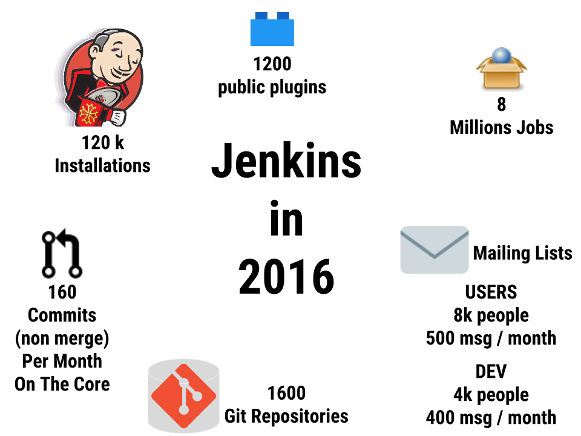
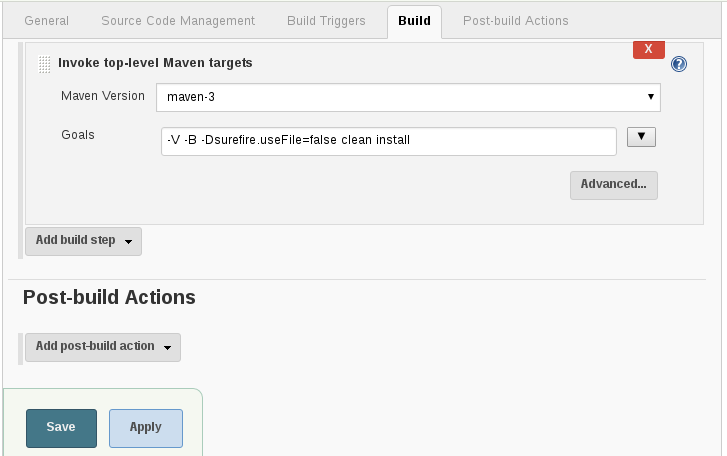
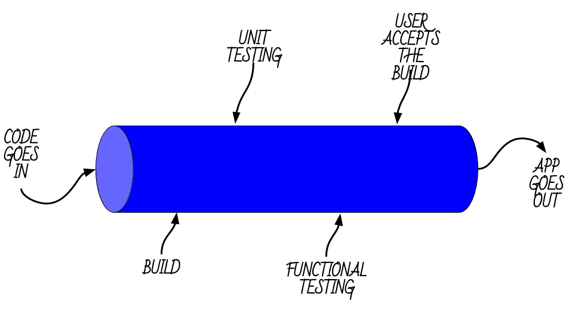
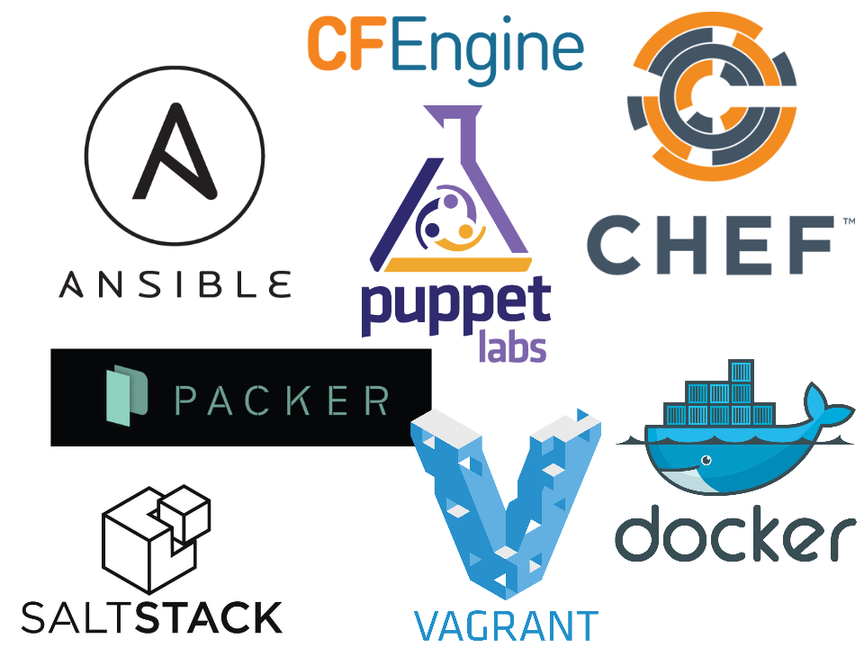
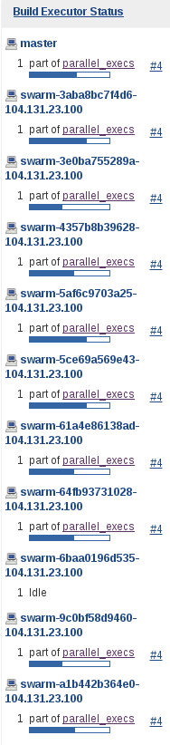
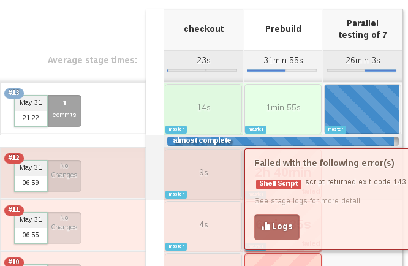
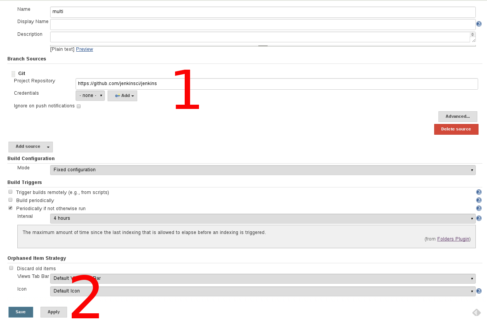
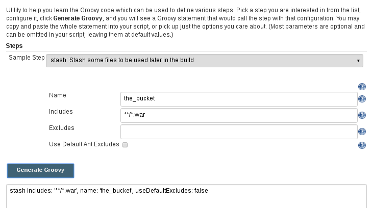
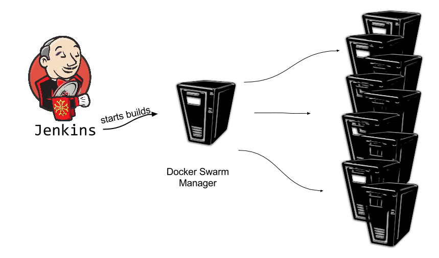

def BaptisteMathus =
people.filter(p -> p.isHacker())
.filter(p -> p.isOpenSourceFan())
.filter(p -> p.lovesCommunities())
.filter(p -> p.isCommitterOn("Jenkins"))
.filter(p -> p.isCommitterOn("MojoHaus"))
.filter(p -> p.doesRidiculousJokes())
.uniqueResult()Jenkins Pipeline As Code
Baptiste Mathus@bmathus
About Me
#jenkins #java #docker #maven #automation #devops #passion
Agenda
- Quick History Of Jenkins
- Build Jenkins!
- Build Jenkins, again! Quicker.
A bit of history
2005 : Hudson created by Kohsuke Kawaguchi
2011 : Oracle forks the project.
The community renames the project to Jenkins and goes away
2016 : Jenkins Project Still Vibrant

Let’s build… Jenkins
Typically. You would do:


- Deploy to test environment? User Acceptance Testing?

Or, create a bunch of jobs.
Wait. What if I want to
- Wait for user input?
Parallelize some of the steps?
- fail-fast?
Deploy to a testing environment
- after successful standard tests,
- but before UA Testing is finished?
- If UAT fails, rollback to previous version?
- And more…
Pipeline: From Code To Deployed App

But what about maintenance?
- Versioning?
- Readability?
- Robustness?
Everything As Code

When everything is code, then versioning comes (almost) for free.
Also, rollback.
Go faster!
Deliver As Fast As Possible!
What is a commit that is not running in production?
A Commit Not Yet In Production Is Stock!
The Jenkins Pipeline Plugin(s)
- Scripted — Domain Specific Language
- Pausable
- Extensible
- Fist public beta release: June 2014
So, now. Let’s get back to building Jenkins
node ('label') {
git "https://github.com/jenkinsci/jenkins.git"
// triggers the tool install as usual
def java = tool 'jdk-1.8.0'
def maven = tool 'maven-3'
withEnv(["JAVA_HOME=$java",
"PATH+MAVEN=$maven/bin:
${env.JAVA_HOME}/bin"]) {
sh "mvn clean deploy ..."
}
}Question to the user?
input message: "Deploy to prod?"input message: "Deploy to prod?",
parameters:[[$class:'StringParameterDefinition',
defaultValue: 'NOW',
description: '...',
name: 'hour'
]]
}Multi-nodes
stash: To pass things around
stash includes: '**/*.jar,war/target/*.war',
name: 'bucket'
...
unstash 'bucket'Parallelism
parallel core: {
}, tests: {
}Fail fast?
parallel core: {
}, tests: {
}, failFast: trueparallel actually takes a Map
|

|
Visualization?
stage lets you define logical steps of your pipeline.
Today:
stage "Checkout"
...
...
stage "Prebuild"
...
...Soon:
stage ("Prebuild") {
...
...
}The Stage View Plugin

But then again…
- What about versioning?
- How to handle many [feature] Branches?
Jenkinsfile!
Multibranch Pipeline
- Define Pipeline in a
Jenkinsfilein the repo and create job:

Editing facilities?
- Snippet Generator

- IntelliJ GDSL: bringing autocompletion to DSL
- More To Come
Demo!
Infrastructure:

Rationale: from linear to (naively) parallel
- prebuild things
- stash them
- split tests per starting letter
- spawn them on one node
Code
Prebuild:
node ('demo') {
stage: "Clone"
git 'https://github.com/jenkinsci/jenkins.git'
stage "Install Maven"
stage "Prebuild"
withEnv(["PATH+MAVEN=${tool 'maven-3'}/bin"]) {
sh "mvn ... package -DskipTests..."
}
stash includes: '**', name: 'prebuilt'
}Prepare tests:
def tests = [:]
for (char letter='A';letter<'Z';++letter) {
tests["$letter tests"] = {
node ('demo') {
unstash 'prebuilt'
withEnv(["PATH+MAVEN=${ tool 'maven-3' }/bin"]) {
sh "mvn ... package '-Dtest=$letter*Test'"
}
}
}
}Gotchas
- C-style loops only - no functional Groovy yet (JENKINS-26481)
- Script approval can be cumbersome (aka whitelisting)
- Existing plugins support — Though quickly improving
The Future
- Still early days, but already very usable
- More and more real world feedback
- Visual Designer
- IDE support (Eclipse anyone?)
- BlueOcean! Developer Experience Revisited
Come to us. We have cookies.
Thanks
For the Cloud Credits |
We’re hiring! |
References
/